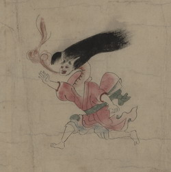

蛇に変化しつつある清姫。長い髪は逆立ち、額に長い角が2本生えている。目は赤くなり、口から炎をあげている。首が伸び、蛇腹のようになっている。右腕を差しのばして、安珍を追いかけている。
出典：親書誌：U426_nichibunken_0152：道成寺縁起；ドウジョウジエンギ／日付：2010／資源識別子：U426_nichibunken_0152_0006_0000
Copyright (c)2010- International Research Center for Japanese Studies, Kyoto, Japan. All rights reserved.